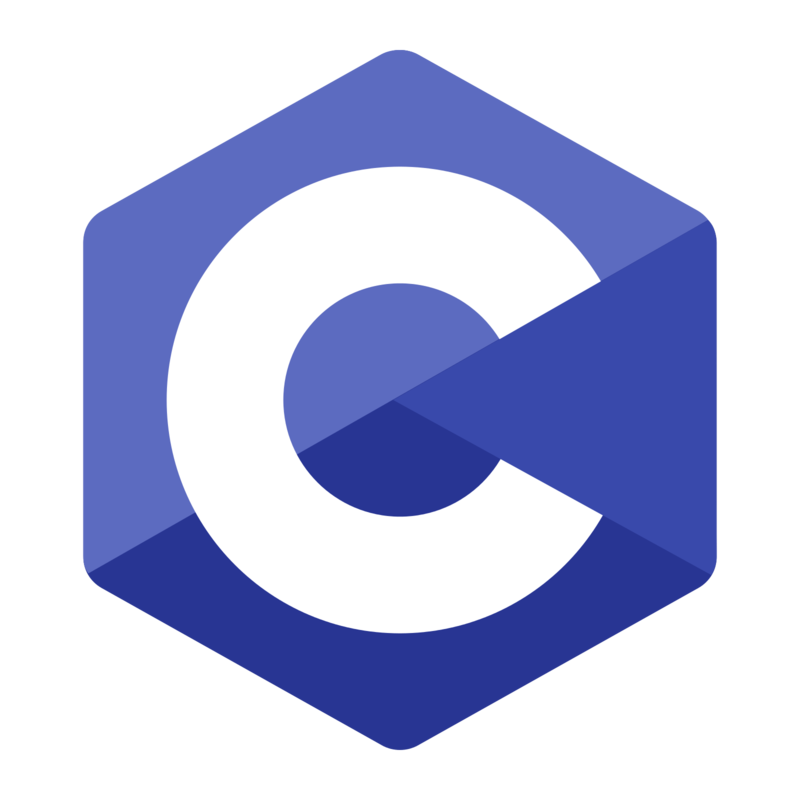
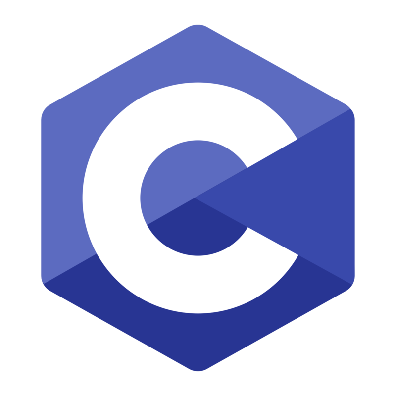

Projects

전동 킥보드용 ADAS 시스템 (진행중)
Skills : Python
Device : Raspberry Pi, Google Coral USB(TPU)
전동킥보드가 '도로위의 무법자'가 된 지금, 카메라 및 센서를 통한 ADAS 및 경보 시스템을 구축하는 프로젝트입니다.
탐지된 객체의 Depth는 카메라의 초점거리와 주점을 삼각법으로 이용해 X-Y Coordinate로 측정하습니다. EKF와 직전 측정 지점을 조합해 예측지점을 생성하고, 객체의 색상을 포함해 헝가리안 알고리즘으로 매칭하여 객체를 구분 및 벡터 측정을 하였습니다.
인생샷 찍기 프로젝트 : 라라카 (진행중)
Skills : Python & Django
Device : Raspberry Pi(Prototype), 이후 SmartPhone 사용 예정
여행 등에서 혼자 사진을 찍기 힘들다는 점에 착안해 시작한 프로젝트입니다.
스마트폰으로 원하는 설정된 구도의 사진을 혼자서 찍을 수 있도록 해주는 장치의 개발과, 근처 위치에서 같은 장치를 이용해서 찍은 사진을 추천 시스템을 통해 추천해주고, 비슷한 사진을 찍을 수 있도록 유도해주는 장치입니다.

차량용 펫 케어 서비스 : 방울이가 타고있어요
Skills : Python, Node.js & Express, webOS
Device : Raspberry Pi
프로젝트 설명 영상 : https://www.youtube.com/watch?v=oWH7sbvk6Cw&feature=youtu.be
Express로 구성된 서버와 라즈베리파이가 REST API를 통해 통신하는 방법을 사용하였으며, 웹페이지를 통해 기기를 모두 조작할 수 있습니다.
스트리밍은 각각의 라즈베리파이 끼리 WebRTC를 활용하여 구현하였습니다.
 
